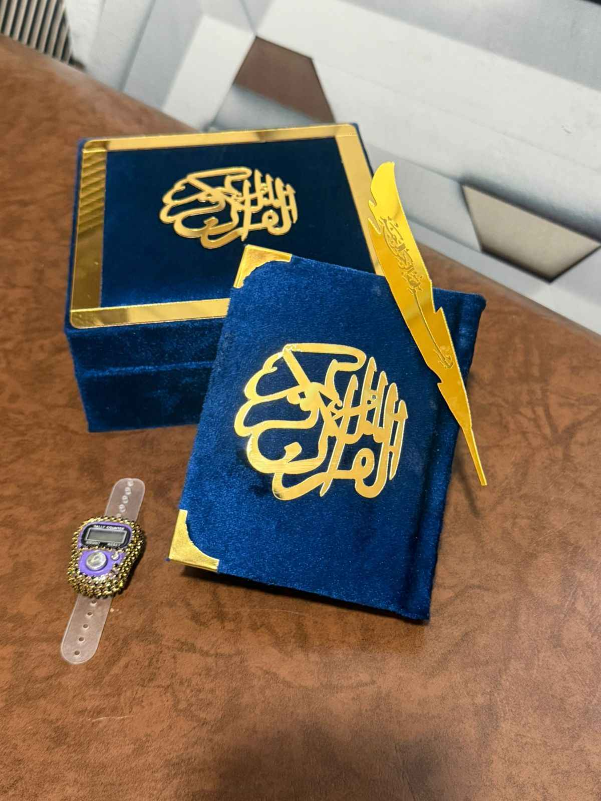

6 Acts of Continuous Charity
Invest in your hereafter by implementing these easy, highly-rewarding deeds today. These are 6 acts of Sadaqah Jariyah you can start today.

1. Gift a Holy Quran
Provide a copy of the Holy Quran to an individual, a school or a local mosque. Every single time a letter from it is recited, an immense spiritual reward is directly credited to your account and when the reader teaches someone else, that reward grows further. How to start: gift one Quran to a student, a new Muslim or a mosque library.
2. Donate a Wheelchair
Donate mobility equipment or medical resources to a hospital or clinic. Every single instance an ailing, sick or elderly person finds comfort and uses it, you gain persistent blessings. Medical sadaqah jariyah is often forgotten, yet it directly eases pain and that ease continues for every patient who uses the equipment after you.

3. Build a Mosque
Participate financially or physically in building or maintaining a mosque. You earn continuous rewards for every single prayer, prostration and remembrance of Allah made inside it. “Whoever builds a mosque for Allah, Allah will build for him a house in Paradise.” (Sahih al-Bukhari 450; Sahih Muslim 533) You do not need to fund an entire Mosque even a small contribution counts.

4. Provide Clean Water
Place a functioning water cooler, filtration plant or dig a water well in a crowded public space. Providing access to clean water is highly emphasized as one of the best forms of charity. “The best charity is giving water to drink.” (Musnad Ahmad 17058) A water well is also one of the best sadaqah jariyah gifts for deceased parents.

5. Plant a Tree
Plant a tree or a crop field. Every time a human seeker, a passing traveler, a bird or an animal consumes its fresh fruit or finds comfortable shade underneath it, you gain automated continuous reward. “No Muslim plants a tree from which a bird, person or animal eats, except that it is charity for them.” (Sahih Muslim 1552) It costs almost nothing, yet keeps giving for decades.

6. Spread Beneficial Knowledge
And the easiest method: Share this message with others. Simply spreading beneficial knowledge grants you equivalent rewards whenever an inspired individual acts upon any item listed here. “The best among you are those who learn the Quran and teach it.” (Sahih al-Bukhari 5027) Teaching a skill, a verse or a good habit all fall under beneficial knowledge.